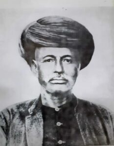
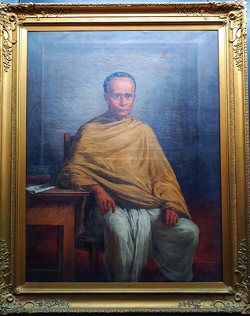
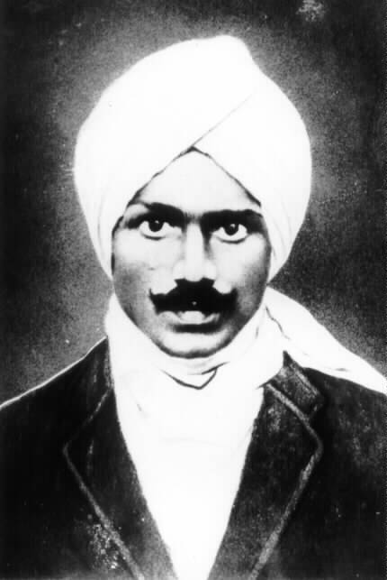
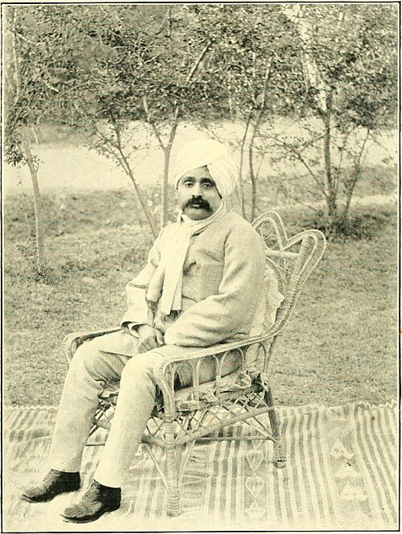

Who Are the Reformers?
India's reform movement (19th–20th century) was a powerful wave of social, religious, and political change. From Raja Ram Mohan Roy's crusade against Sati to Dr. B.R. Ambedkar's fight for Dalit rights, these extraordinary individuals challenged deep-rooted orthodoxies and laid the foundation for a modern, inclusive India. Explore their lives and enduring legacies below.

Raja Ram Mohan Roy
1772 – 1833
Social & Religious Reformer

Swami Vivekananda
1863 – 1902
Spiritual Leader & Philosopher

Mahatma Gandhi
1869 – 1948
Freedom Fighter & Social Reformer

Dr. B.R. Ambedkar
1891 – 1956
Jurist, Economist & Social Reformer

Jyotiba Phule
1827 – 1890
Social Reformer & Educationist

Savitribai Phule
1831 – 1897
First Female Teacher of India

Ishwar Chandra Vidyasagar
1820 – 1891
Scholar & Social Reformer

Dayanand Saraswati
1824 – 1883
Founder of Arya Samaj

Sarojini Naidu
1879 – 1949
Poet & Freedom Fighter

Subramania Bharati
1882 – 1921
Poet & Social Reformer

Bhagat Singh
1907 – 1931
Revolutionary & Martyr

Lala Lajpat Rai
1865 – 1928
Freedom Fighter & Educationist